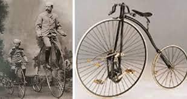
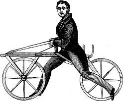

자전거란
바퀴가 달려있으며,
사람이 탑승하여 주로 발을 이용해 페달을 돌림으로써
전진하는 탈 것으로 정의한다.
바퀴가 등장한 것은 기원전부터였지만 자전거와 같이
보행을 돕는 탈것이 나타난 것은 18세기 말이였다.
1790년 프랑스의 귀족 콩뜨 드 시브락이 만든
셀레리페르는 같은 크기인 두 개의 나무 바퀴를
나무로 연결하고 간단한 안장을 얹은 엉성한 탈것이었다.
1817년 독일에서 카를 폰 드리이스는 앞바퀴를 움직여서
원하는 방향으로 달릴 수 있는 목제 두 바퀴 자전거를
만들어 다음에 파리에서 드라이지네라는 이름으로 공개했다.
드라이지네는 영국으로 건너가 개량되어
호비호스, 댄디호스라는 이름을 얻고 큰 인기를 끌었다.

그러나 이 모델들은 모두 발로 땅을 차서 움직이는 것으로
능숙한 이들이 겨우 10km 정도의 속도만 낼 수 있었을 뿐
실용성과 오락성 부분에서는 기대에 못 미쳐
대중적으로 보급되지는 못했다.
자전거는 1839년, 영국 스코틀랜드에서 대장간을 하던
커크패트릭 맥밀런의 고안으로 큰 진전을 보게 된다.
그는 좌우 2개의 페달을 밟아서 연결봉과 크랭크를 통해
뒷바퀴를 돌리는 자전거를 만들어냈다.
증기기관차의 피스톤을 움직이면 컨로드와 크랭크를 통해
바퀴가 구르는 것과 같은 방식이다.
드디어 사람이 땅에서 발을 뗀 채로 굴러가는
자전거가 태어난 것이다.